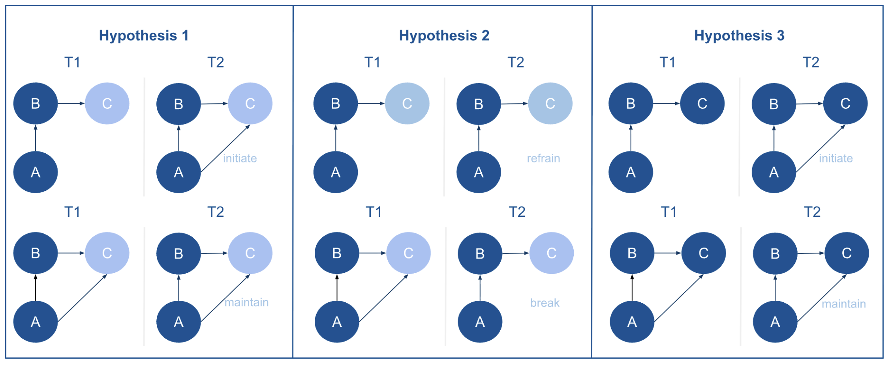

Theory
The first two research questions are descriptive and not
hypothesis-driven, but they are essential for establishing the local
network landscape. Specifically, examining how frequently different
triadic structures occur (RQ1) and how gender is distributed across
these triads (RQ2) provides the foundation for understanding the context
in which collaboration decisions take place.
The third research question, by contrast, is theory-driven and
focuses on the micro-level mechanisms that may influence triadic
closure. The social network structure central to this research is an A
-> B -> C configuration, in which A and B share the same gender. I
am interested in whether the gender of C affects A’s likelihood of
forming or maintaining a tie with C. This can be interpreted through
intergroup relations theories. The following section outlines how these
theories, specifically Contact Theory and Social Identity Theory, apply
to this triadic structure and inform competing hypotheses about gendered
closure.
Hypothesis 1
Contact Theory suggests that interactions between members of
different social groups can reduce prejudice and foster more positive
intergroup attitudes (Allport 1954).
Suppose researchers A and B are both men, and B has collaborated with
researcher C, who is a woman. Even if A initially prefers to work with
men, reflecting dyadic homophily (Wang et al.
2023), observing that B has successfully collaborated with C may
alter A’s perceptions. Through this indirect exposure, A experiences
positive contact with an outgroup member via a trusted collaborator,
which may increase his willingness to collaborate with C despite initial
biases.
Previous social network research on extended contact shows that
indirect exposure can indeed foster more positive intergroup attitudes
(Stark 2020). However, Stark notes that
this effect requires the outgroup member to be more than a distant,
unknown figure. In the context of sociology and political science
departments in Dutch universities, I believe researchers are likely to
be at least peripherally aware of one another. Therefore, I expect:
H1: In A -> B -> C collaboration triads within the sociology
and political science departments of Dutch universities, where C differs
in gender from A and B, A is more likely to initiate or maintain (rather
than break or avoid) collaboration with C across the period from Wave 1
(2015–2018) to Wave 2 (2019–2023).
Hypothesis 2
Social Identity Theory (SIT) posits that group membership forms a
central part of an individual’s self-concept and can lead to ingroup
favoritism and outgroup bias (Tajfel and Turner
2004). Gender is a salient social identity, and people tend to
automatically categorize others as male or female in interactions (Carter 2014). Consequently, when researchers A
and B share the same gender, their common identity can strengthen trust
and ingroup cohesion, making A more inclined to collaborate with others
of the same gender and more hesitant to collaborate with C if C belongs
to a different gender. These triadic patterns can reinforce gender
boundaries, promote same-gender clustering, and contribute to persistent
gender segregation at the macro level.
Based on this reasoning, the opposite of Hypothesis 1 is expected: A
is more likely to avoid collaboration with C when C differs in gender
from both A and B, perceiving C as an outgroup member. Formally, this
leads to the following hypothesis:
H2: In A → B → C collaboration triads within the sociology and
political science departments of Dutch universities, when C differs in
gender from A and B, A is more likely to break or refrain from forming a
tie with C, rather than initiate or maintain collaboration, across the
period from Wave 1 (2015–2018) to Wave 2 (2019–2023).
Conversely, when C shares the same gender as A and B, A is more
likely to initiate or maintain collaboration, as C is considered part of
the ingroup:
H3: In A → B → C collaboration triads within the sociology and
political science departments of Dutch universities, where C is the same
gender as A and B, A is more likely to initiate or maintain (rather than
break or avoid) collaboration with C across the period from Wave 1
(2015–2018) to Wave 2 (2019–2023).
As these hypotheses are perhaps a bit hard to read, I created this
visualization:

Conclusion
Taken together, these intergroup theories offer contrasting
predictions about how triadic structures relate to gender segregation in
academic collaboration networks. Contact Theory predicts that indirect
or mediated cross-gender collaborations can gradually reduce gender
boundaries by promoting positive exposure across groups. Social Identity
Theory, by contrast, predicts that individuals are more likely to form
and maintain triads that reinforce gender similarity, as collaborating
with same-gender peers strengthens trust and shared identity, thereby
inhibiting the closure of mixed-gender triads. Testing both perspectives
allows for an assessment of whether triadic closure processes in
academic collaboration networks serve to bridge or reproduce gender
divisions.
Social Network Analysis (SNA) provides an ideal framework for testing
these competing hypotheses, as it allows for the systematic examination
of how group-based identities shape network formation (Wölfer, Faber, and Hewstone 2015). SNA enriches
research on social identity, intergroup contact, and ingroup–outgroup
dynamics by identifying substructures such as peer clusters or
disciplinary communities, as well as by incorporating external
attributes such as gender.
LS0tCnRpdGxlOiAiSm91cm5hbCAxIgpiaWJsaW9ncmFwaHk6IHJlZmVyZW5jZXMuYmliCmF1dGhvcjogIk15bMOobmUgSHVzc29uIgotLS0KCmBgYHtyLCBnbG9iYWxzZXR0aW5ncywgZWNobz1GQUxTRSwgaW5jbHVkZT1UUlVFLCB3YXJuaW5nPUZBTFNFLCByZXN1bHRzPSdoaWRlJ30KbGlicmFyeShrbml0cikKCmtuaXRyOjpvcHRzX2NodW5rJHNldChlY2hvID0gVFJVRSkKb3B0c19jaHVuayRzZXQodGlkeS5vcHRzPWxpc3Qod2lkdGguY3V0b2ZmPTEwMCksdGlkeT1UUlVFLCB3YXJuaW5nID0gRkFMU0UsIG1lc3NhZ2UgPSBGQUxTRSxjb21tZW50ID0gIiM+IiwgY2FjaGU9VFJVRSwgY2xhc3Muc291cmNlPWMoInRlc3QiKSwgY2xhc3Mub3V0cHV0PWMoInRlc3QyIikpCm9wdGlvbnMod2lkdGggPSAxMDApCiNyZ2w6OnNldHVwS25pdHIoKQoKCgpjb2xvcml6ZSA8LSBmdW5jdGlvbih4LCBjb2xvcikge3NwcmludGYoIjxzcGFuIHN0eWxlPSdjb2xvcjogJXM7Jz4lczwvc3Bhbj4iLCBjb2xvciwgeCkgfQoKYGBgCgpgYGB7ciBrbGlwcHksIGVjaG89RkFMU0UsIGluY2x1ZGU9VFJVRX0Ka2xpcHB5OjprbGlwcHkocG9zaXRpb24gPSBjKCd0b3AnLCAncmlnaHQnKSkKI2tsaXBweTo6a2xpcHB5KGNvbG9yID0gJ2RhcmtyZWQnKQoja2xpcHB5OjprbGlwcHkodG9vbHRpcF9tZXNzYWdlID0gJ0NsaWNrIHRvIGNvcHknLCB0b29sdGlwX3N1Y2Nlc3MgPSAnRG9uZScpCmBgYAoKCkxhc3QgY29tcGlsZWQgb24gYHIgZm9ybWF0KFN5cy50aW1lKCksICclQiwgJVknKWAKPGJyPgoKLS0tLS0tLS0tLS0tLS0tLS0tLS0tLS0tLS0tLS0tLS0tLS0tLS0tLS0tLS0tLS0tLS0tLS0tLS0tLS0tLS0tLS0tLS0tLS0tCgojIFRoZW9yeQoKVGhlIGZpcnN0IHR3byByZXNlYXJjaCBxdWVzdGlvbnMgYXJlIGRlc2NyaXB0aXZlIGFuZCBub3QgaHlwb3RoZXNpcy1kcml2ZW4sIGJ1dCB0aGV5IGFyZSBlc3NlbnRpYWwgZm9yIGVzdGFibGlzaGluZyB0aGUgbG9jYWwgbmV0d29yayBsYW5kc2NhcGUuIFNwZWNpZmljYWxseSwgZXhhbWluaW5nIGhvdyBmcmVxdWVudGx5IGRpZmZlcmVudCB0cmlhZGljIHN0cnVjdHVyZXMgb2NjdXIgKFJRMSkgYW5kIGhvdyBnZW5kZXIgaXMgZGlzdHJpYnV0ZWQgYWNyb3NzIHRoZXNlIHRyaWFkcyAoUlEyKSBwcm92aWRlcyB0aGUgZm91bmRhdGlvbiBmb3IgdW5kZXJzdGFuZGluZyB0aGUgY29udGV4dCBpbiB3aGljaCBjb2xsYWJvcmF0aW9uIGRlY2lzaW9ucyB0YWtlIHBsYWNlLgoKVGhlIHRoaXJkIHJlc2VhcmNoIHF1ZXN0aW9uLCBieSBjb250cmFzdCwgaXMgdGhlb3J5LWRyaXZlbiBhbmQgZm9jdXNlcyBvbiB0aGUgbWljcm8tbGV2ZWwgbWVjaGFuaXNtcyB0aGF0IG1heSBpbmZsdWVuY2UgdHJpYWRpYyBjbG9zdXJlLiBUaGUgc29jaWFsIG5ldHdvcmsgc3RydWN0dXJlIGNlbnRyYWwgdG8gdGhpcyByZXNlYXJjaCBpcyBhbiBBIC0+IEIgLT4gQyBjb25maWd1cmF0aW9uLCBpbiB3aGljaCBBIGFuZCBCIHNoYXJlIHRoZSBzYW1lIGdlbmRlci4gSSBhbSBpbnRlcmVzdGVkIGluIHdoZXRoZXIgdGhlIGdlbmRlciBvZiBDIGFmZmVjdHMgQeKAmXMgbGlrZWxpaG9vZCBvZiBmb3JtaW5nIG9yIG1haW50YWluaW5nIGEgdGllIHdpdGggQy4gVGhpcyBjYW4gYmUgaW50ZXJwcmV0ZWQgdGhyb3VnaCBpbnRlcmdyb3VwIHJlbGF0aW9ucyB0aGVvcmllcy4gVGhlIGZvbGxvd2luZyBzZWN0aW9uIG91dGxpbmVzIGhvdyB0aGVzZSB0aGVvcmllcywgc3BlY2lmaWNhbGx5IENvbnRhY3QgVGhlb3J5IGFuZCBTb2NpYWwgSWRlbnRpdHkgVGhlb3J5LCBhcHBseSB0byB0aGlzIHRyaWFkaWMgc3RydWN0dXJlIGFuZCBpbmZvcm0gY29tcGV0aW5nIGh5cG90aGVzZXMgYWJvdXQgZ2VuZGVyZWQgY2xvc3VyZS4KCjxicj4KCiMjIEh5cG90aGVzaXMgMQoKQ29udGFjdCBUaGVvcnkgc3VnZ2VzdHMgdGhhdCBpbnRlcmFjdGlvbnMgYmV0d2VlbiBtZW1iZXJzIG9mIGRpZmZlcmVudCBzb2NpYWwgZ3JvdXBzIGNhbiByZWR1Y2UgcHJlanVkaWNlIGFuZCBmb3N0ZXIgbW9yZSBwb3NpdGl2ZSBpbnRlcmdyb3VwIGF0dGl0dWRlcyBbQEFsbHBvcnRdLiBTdXBwb3NlIHJlc2VhcmNoZXJzIEEgYW5kIEIgYXJlIGJvdGggbWVuLCBhbmQgQiBoYXMgY29sbGFib3JhdGVkIHdpdGggcmVzZWFyY2hlciBDLCB3aG8gaXMgYSB3b21hbi4gRXZlbiBpZiBBIGluaXRpYWxseSBwcmVmZXJzIHRvIHdvcmsgd2l0aCBtZW4sIHJlZmxlY3RpbmcgZHlhZGljIGhvbW9waGlseSBbQHdhbmcyMDIzaG9tb3BoaWx5XSwgb2JzZXJ2aW5nIHRoYXQgQiBoYXMgc3VjY2Vzc2Z1bGx5IGNvbGxhYm9yYXRlZCB3aXRoIEMgbWF5IGFsdGVyIEHigJlzIHBlcmNlcHRpb25zLiBUaHJvdWdoIHRoaXMgaW5kaXJlY3QgZXhwb3N1cmUsIEEgZXhwZXJpZW5jZXMgcG9zaXRpdmUgY29udGFjdCB3aXRoIGFuIG91dGdyb3VwIG1lbWJlciB2aWEgYSB0cnVzdGVkIGNvbGxhYm9yYXRvciwgd2hpY2ggbWF5IGluY3JlYXNlIGhpcyB3aWxsaW5nbmVzcyB0byBjb2xsYWJvcmF0ZSB3aXRoIEMgZGVzcGl0ZSBpbml0aWFsIGJpYXNlcy4KClByZXZpb3VzIHNvY2lhbCBuZXR3b3JrIHJlc2VhcmNoIG9uIGV4dGVuZGVkIGNvbnRhY3Qgc2hvd3MgdGhhdCBpbmRpcmVjdCBleHBvc3VyZSBjYW4gaW5kZWVkIGZvc3RlciBtb3JlIHBvc2l0aXZlIGludGVyZ3JvdXAgYXR0aXR1ZGVzIFtAU3RhcmtdLiBIb3dldmVyLCBTdGFyayBub3RlcyB0aGF0IHRoaXMgZWZmZWN0IHJlcXVpcmVzIHRoZSBvdXRncm91cCBtZW1iZXIgdG8gYmUgbW9yZSB0aGFuIGEgZGlzdGFudCwgdW5rbm93biBmaWd1cmUuIEluIHRoZSBjb250ZXh0IG9mIHNvY2lvbG9neSBhbmQgcG9saXRpY2FsIHNjaWVuY2UgZGVwYXJ0bWVudHMgaW4gRHV0Y2ggdW5pdmVyc2l0aWVzLCBJIGJlbGlldmUgcmVzZWFyY2hlcnMgYXJlIGxpa2VseSB0byBiZSBhdCBsZWFzdCBwZXJpcGhlcmFsbHkgYXdhcmUgb2Ygb25lIGFub3RoZXIuIFRoZXJlZm9yZSwgSSBleHBlY3Q6CgpIMTogSW4gQSAtPiBCIC0+IEMgY29sbGFib3JhdGlvbiB0cmlhZHMgd2l0aGluIHRoZSBzb2Npb2xvZ3kgYW5kIHBvbGl0aWNhbCBzY2llbmNlIGRlcGFydG1lbnRzIG9mIER1dGNoIHVuaXZlcnNpdGllcywgd2hlcmUgQyBkaWZmZXJzIGluIGdlbmRlciBmcm9tIEEgYW5kIEIsIEEgaXMgbW9yZSBsaWtlbHkgdG8gaW5pdGlhdGUgb3IgbWFpbnRhaW4gKHJhdGhlciB0aGFuIGJyZWFrIG9yIGF2b2lkKSBjb2xsYWJvcmF0aW9uIHdpdGggQyBhY3Jvc3MgdGhlIHBlcmlvZCBmcm9tIFdhdmUgMSAoMjAxNeKAkzIwMTgpIHRvIFdhdmUgMiAoMjAxOeKAkzIwMjMpLgoKPGJyPgoKIyMgSHlwb3RoZXNpcyAyCgpTb2NpYWwgSWRlbnRpdHkgVGhlb3J5IChTSVQpIHBvc2l0cyB0aGF0IGdyb3VwIG1lbWJlcnNoaXAgZm9ybXMgYSBjZW50cmFsIHBhcnQgb2YgYW4gaW5kaXZpZHVhbOKAmXMgc2VsZi1jb25jZXB0IGFuZCBjYW4gbGVhZCB0byBpbmdyb3VwIGZhdm9yaXRpc20gYW5kIG91dGdyb3VwIGJpYXMgW0BUYWpmZWxfVHVybmVyXS4gR2VuZGVyIGlzIGEgc2FsaWVudCBzb2NpYWwgaWRlbnRpdHksIGFuZCBwZW9wbGUgdGVuZCB0byBhdXRvbWF0aWNhbGx5IGNhdGVnb3JpemUgb3RoZXJzIGFzIG1hbGUgb3IgZmVtYWxlIGluIGludGVyYWN0aW9ucyBbQENhcnRlcl0uIENvbnNlcXVlbnRseSwgd2hlbiByZXNlYXJjaGVycyBBIGFuZCBCIHNoYXJlIHRoZSBzYW1lIGdlbmRlciwgdGhlaXIgY29tbW9uIGlkZW50aXR5IGNhbiBzdHJlbmd0aGVuIHRydXN0IGFuZCBpbmdyb3VwIGNvaGVzaW9uLCBtYWtpbmcgQSBtb3JlIGluY2xpbmVkIHRvIGNvbGxhYm9yYXRlIHdpdGggb3RoZXJzIG9mIHRoZSBzYW1lIGdlbmRlciBhbmQgbW9yZSBoZXNpdGFudCB0byBjb2xsYWJvcmF0ZSB3aXRoIEMgaWYgQyBiZWxvbmdzIHRvIGEgZGlmZmVyZW50IGdlbmRlci4gVGhlc2UgdHJpYWRpYyBwYXR0ZXJucyBjYW4gcmVpbmZvcmNlIGdlbmRlciBib3VuZGFyaWVzLCBwcm9tb3RlIHNhbWUtZ2VuZGVyIGNsdXN0ZXJpbmcsIGFuZCBjb250cmlidXRlIHRvIHBlcnNpc3RlbnQgZ2VuZGVyIHNlZ3JlZ2F0aW9uIGF0IHRoZSBtYWNybyBsZXZlbC4KCkJhc2VkIG9uIHRoaXMgcmVhc29uaW5nLCB0aGUgb3Bwb3NpdGUgb2YgSHlwb3RoZXNpcyAxIGlzIGV4cGVjdGVkOiBBIGlzIG1vcmUgbGlrZWx5IHRvIGF2b2lkIGNvbGxhYm9yYXRpb24gd2l0aCBDIHdoZW4gQyBkaWZmZXJzIGluIGdlbmRlciBmcm9tIGJvdGggQSBhbmQgQiwgcGVyY2VpdmluZyBDIGFzIGFuIG91dGdyb3VwIG1lbWJlci4gRm9ybWFsbHksIHRoaXMgbGVhZHMgdG8gdGhlIGZvbGxvd2luZyBoeXBvdGhlc2lzOgoKSDI6IEluIEEg4oaSIEIg4oaSIEMgY29sbGFib3JhdGlvbiB0cmlhZHMgd2l0aGluIHRoZSBzb2Npb2xvZ3kgYW5kIHBvbGl0aWNhbCBzY2llbmNlIGRlcGFydG1lbnRzIG9mIER1dGNoIHVuaXZlcnNpdGllcywgd2hlbiBDIGRpZmZlcnMgaW4gZ2VuZGVyIGZyb20gQSBhbmQgQiwgQSBpcyBtb3JlIGxpa2VseSB0byBicmVhayBvciByZWZyYWluIGZyb20gZm9ybWluZyBhIHRpZSB3aXRoIEMsIHJhdGhlciB0aGFuIGluaXRpYXRlIG9yIG1haW50YWluIGNvbGxhYm9yYXRpb24sIGFjcm9zcyB0aGUgcGVyaW9kIGZyb20gV2F2ZSAxICgyMDE14oCTMjAxOCkgdG8gV2F2ZSAyICgyMDE54oCTMjAyMykuCgpDb252ZXJzZWx5LCB3aGVuIEMgc2hhcmVzIHRoZSBzYW1lIGdlbmRlciBhcyBBIGFuZCBCLCBBIGlzIG1vcmUgbGlrZWx5IHRvIGluaXRpYXRlIG9yIG1haW50YWluIGNvbGxhYm9yYXRpb24sIGFzIEMgaXMgY29uc2lkZXJlZCBwYXJ0IG9mIHRoZSBpbmdyb3VwOgoKSDM6IEluIEEg4oaSIEIg4oaSIEMgY29sbGFib3JhdGlvbiB0cmlhZHMgd2l0aGluIHRoZSBzb2Npb2xvZ3kgYW5kIHBvbGl0aWNhbCBzY2llbmNlIGRlcGFydG1lbnRzIG9mIER1dGNoIHVuaXZlcnNpdGllcywgd2hlcmUgQyBpcyB0aGUgc2FtZSBnZW5kZXIgYXMgQSBhbmQgQiwgQSBpcyBtb3JlIGxpa2VseSB0byBpbml0aWF0ZSBvciBtYWludGFpbiAocmF0aGVyIHRoYW4gYnJlYWsgb3IgYXZvaWQpIGNvbGxhYm9yYXRpb24gd2l0aCBDIGFjcm9zcyB0aGUgcGVyaW9kIGZyb20gV2F2ZSAxICgyMDE14oCTMjAxOCkgdG8gV2F2ZSAyICgyMDE54oCTMjAyMykuCgpBcyB0aGVzZSBoeXBvdGhlc2VzIGFyZSBwZXJoYXBzIGEgYml0IGhhcmQgdG8gcmVhZCwgSSBjcmVhdGVkIHRoaXMgdmlzdWFsaXphdGlvbjoKCiFbXShpbWFnZXMvaHlwb3RoZXNpczIucG5nKQoKPGJyPgoKIyMgQ29uY2x1c2lvbgoKVGFrZW4gdG9nZXRoZXIsIHRoZXNlIGludGVyZ3JvdXAgdGhlb3JpZXMgb2ZmZXIgY29udHJhc3RpbmcgcHJlZGljdGlvbnMgYWJvdXQgaG93IHRyaWFkaWMgc3RydWN0dXJlcyByZWxhdGUgdG8gZ2VuZGVyIHNlZ3JlZ2F0aW9uIGluIGFjYWRlbWljIGNvbGxhYm9yYXRpb24gbmV0d29ya3MuIENvbnRhY3QgVGhlb3J5IHByZWRpY3RzIHRoYXQgaW5kaXJlY3Qgb3IgbWVkaWF0ZWQgY3Jvc3MtZ2VuZGVyIGNvbGxhYm9yYXRpb25zIGNhbiBncmFkdWFsbHkgcmVkdWNlIGdlbmRlciBib3VuZGFyaWVzIGJ5IHByb21vdGluZyBwb3NpdGl2ZSBleHBvc3VyZSBhY3Jvc3MgZ3JvdXBzLiBTb2NpYWwgSWRlbnRpdHkgVGhlb3J5LCBieSBjb250cmFzdCwgcHJlZGljdHMgdGhhdCBpbmRpdmlkdWFscyBhcmUgbW9yZSBsaWtlbHkgdG8gZm9ybSBhbmQgbWFpbnRhaW4gdHJpYWRzIHRoYXQgcmVpbmZvcmNlIGdlbmRlciBzaW1pbGFyaXR5LCBhcyBjb2xsYWJvcmF0aW5nIHdpdGggc2FtZS1nZW5kZXIgcGVlcnMgc3RyZW5ndGhlbnMgdHJ1c3QgYW5kIHNoYXJlZCBpZGVudGl0eSwgdGhlcmVieSBpbmhpYml0aW5nIHRoZSBjbG9zdXJlIG9mIG1peGVkLWdlbmRlciB0cmlhZHMuIFRlc3RpbmcgYm90aCBwZXJzcGVjdGl2ZXMgYWxsb3dzIGZvciBhbiBhc3Nlc3NtZW50IG9mIHdoZXRoZXIgdHJpYWRpYyBjbG9zdXJlIHByb2Nlc3NlcyBpbiBhY2FkZW1pYyBjb2xsYWJvcmF0aW9uIG5ldHdvcmtzIHNlcnZlIHRvIGJyaWRnZSBvciByZXByb2R1Y2UgZ2VuZGVyIGRpdmlzaW9ucy4KClNvY2lhbCBOZXR3b3JrIEFuYWx5c2lzIChTTkEpIHByb3ZpZGVzIGFuIGlkZWFsIGZyYW1ld29yayBmb3IgdGVzdGluZyB0aGVzZSBjb21wZXRpbmcgaHlwb3RoZXNlcywgYXMgaXQgYWxsb3dzIGZvciB0aGUgc3lzdGVtYXRpYyBleGFtaW5hdGlvbiBvZiBob3cgZ3JvdXAtYmFzZWQgaWRlbnRpdGllcyBzaGFwZSBuZXR3b3JrIGZvcm1hdGlvbiBbQFdvbGZdLiBTTkEgZW5yaWNoZXMgcmVzZWFyY2ggb24gc29jaWFsIGlkZW50aXR5LCBpbnRlcmdyb3VwIGNvbnRhY3QsIGFuZCBpbmdyb3Vw4oCTb3V0Z3JvdXAgZHluYW1pY3MgYnkgaWRlbnRpZnlpbmcgc3Vic3RydWN0dXJlcyBzdWNoIGFzIHBlZXIgY2x1c3RlcnMgb3IgZGlzY2lwbGluYXJ5IGNvbW11bml0aWVzLCBhcyB3ZWxsIGFzIGJ5IGluY29ycG9yYXRpbmcgZXh0ZXJuYWwgYXR0cmlidXRlcyBzdWNoIGFzIGdlbmRlci4KCgo8YnI+CgojIFJlZmVyZW5jZXMK